Participants
- Nic Jansma, Jose Dapena Paz, Michal Mocny, Barry Pollard, Yoav Weiss, Patrick Meenan, Dan Shappir, Andy Davies, Monica Chintala, Bas Schouten, Dave Hunt, Andy Luhrs, Jacob Groß, Luis Flores, Guohui Deng, Annie Sullivan, Victor Huang, Amiya Gupta, Neil Craig, Sean Feng,
Admin
- Next call - May 8th - 1pm ET / 10am PT
- Issue triage - April 30th - 10am ET
Minutes
Recording
- Slides: https://docs.google.com/presentation/d/1A8_Utx8CuS1R0gj9ureThwd2bTQKJyOQOKJi7HijFJI/edit?slide=id.p#slide=id.p
- Monica: Share some ideas around improving ResourceTiming API
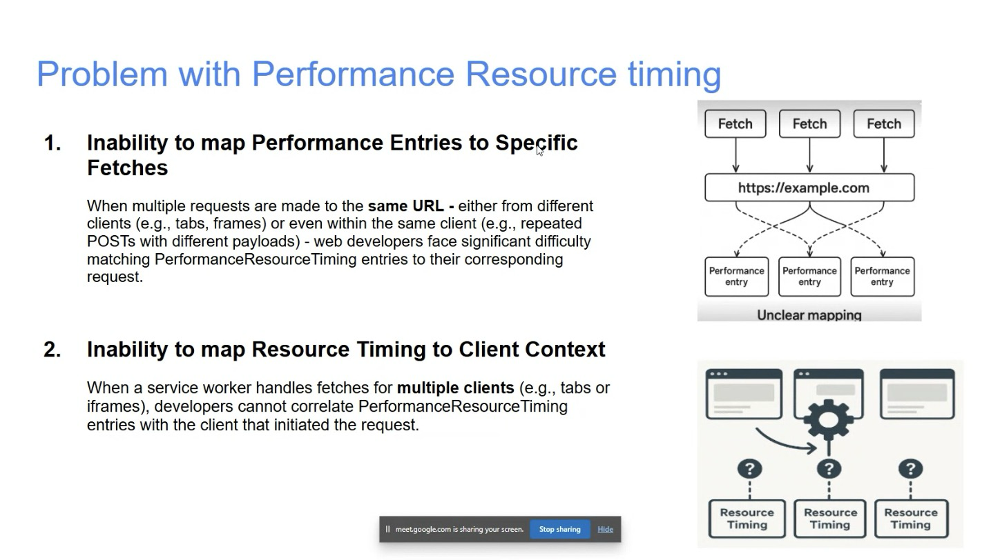
height: 812.00px; margin-left: 0.00px; margin-top: 0.00px; transform: rotate(0.00rad) translateZ(0px); -webkit-transform: rotate(0.00rad) translateZ(0px);" title="">- … Two issues in RT API based on feedback from partners and developers on Github
- … First issue is inability to map RT entry to specific request
- … When same URL is fetched multiple times, it becomes difficult for developers to know which RT entry corresponds to
- … Second issue is inability to map timing data to client context, when there are ServiceWorkers involved
- … SW could be handling requests from multiple IFRAMEs
- … No way to determine which entry came from which client
- … Use cases from partners
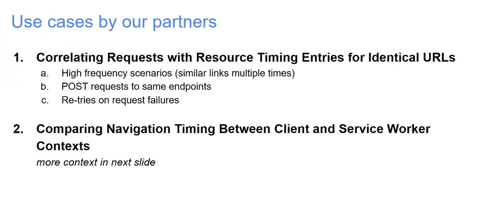
height: 592.00px; margin-left: 0.00px; margin-top: 0.00px; transform: rotate(0.00rad) translateZ(0px); -webkit-transform: rotate(0.00rad) translateZ(0px);" title="">- … One wants to track repeated/high frequency requests to same URL, e.g. POSTs or retries
- … Hard to map to RT entries
- … Other partner wants to map SW to specific tabs and content
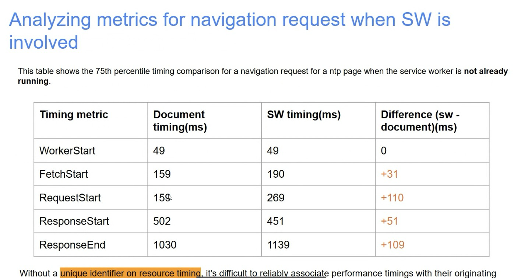
height: 754.00px; margin-left: 0.00px; margin-top: 0.00px; transform: rotate(0.00rad) translateZ(0px); -webkit-transform: rotate(0.00rad) translateZ(0px);" title="">- … Table from our metric analysis
- … Differences in ServiceWorker timings from document and SW contexts
- … Highlights timing overhead when SW is involved but not running
- … Our MVP partner wants to anlayze how perf varies across multiple tabs when intercepted by SW
- … Goal is to get precise breakdown in timeline
- … How changes already running or not
- … Without way to map RT back to right client, this analysis is limited
- … e.g. if multiple tabs map same page, no way to tell entry to tab
- … Proposal is to add a responseId to Response and ResourceTiming
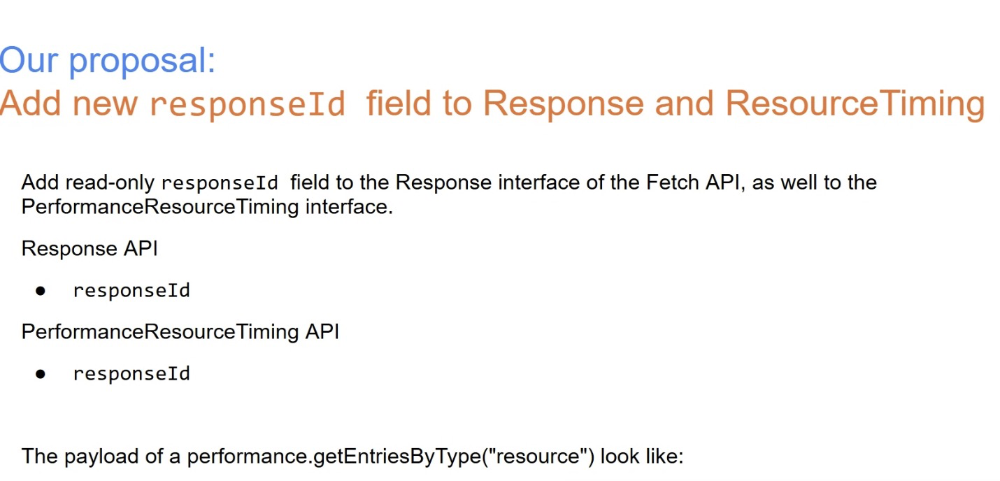
height: 688.00px; margin-left: 0.00px; margin-top: 0.00px; transform: rotate(0.00rad) translateZ(0px); -webkit-transform: rotate(0.00rad) translateZ(0px);" title="">- … User Agent is responsible for unique identifies for each response it creates
- … ID can be exposed in Response object (SW) and in RT entry in page
- … Would allow developers to track high-frequency scenarios
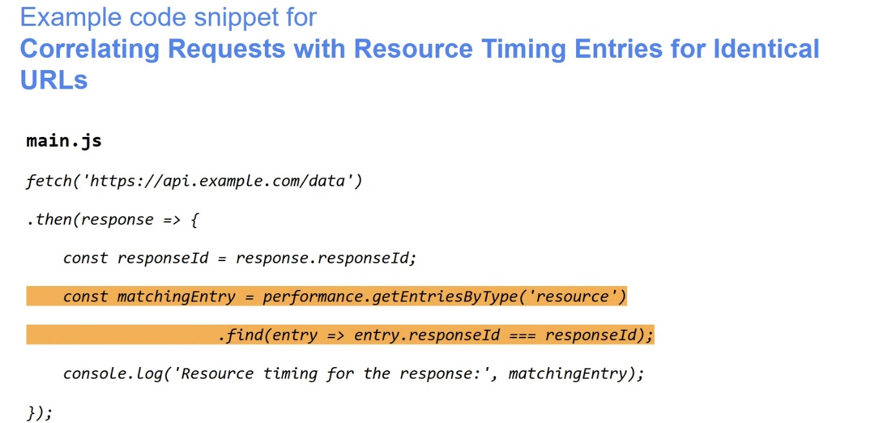
height: 658.00px; margin-left: 0.00px; margin-top: 0.00px; transform: rotate(0.00rad) translateZ(0px); -webkit-transform: rotate(0.00rad) translateZ(0px);" title="">- … Example code
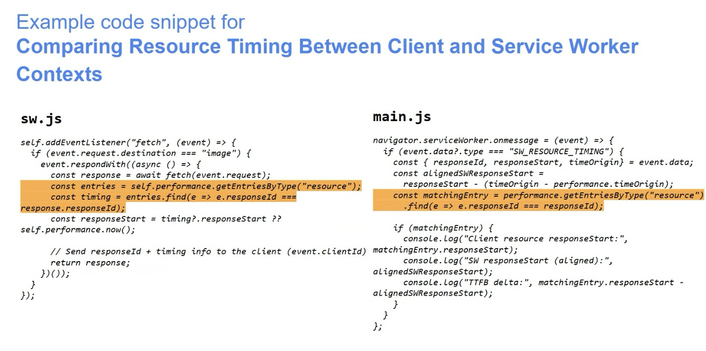
height: 710.00px; margin-left: 0.00px; margin-top: 0.00px; transform: rotate(0.00rad) translateZ(0px); -webkit-transform: rotate(0.00rad) translateZ(0px);" title="">- … More example code, for Service Worker
- … Allows performance analysis across different contexts
- … Would like to hear feedback on this
- … More details including alternatives in explainer
- … https://aka.ms/MapResourceTimings
- Michal: Slide with numbers you’re seeing from the field
- … I don’t play with RT and SWs very often, but I think I understand why the doc might think the fetchStart is before SW fetchStarts, and requestStart
- … But why does the document think the responseEnds before SW thinks it ends
- Monica: responseEnd comes to SW, then goes to main thread, I think they’re swapped here
- … Analysis based on our metrics
- Michal: I think I understand use case
- … Do we need a unique ID? Non goal
- … We have a URL, do any of the timestamps not help uniquely identify the resource and match fetch?
- … Is it possible the moment you start the request, the RT and SW, could they be used to match?
- Monica: If there’s a timing from page, and propagated to SW…
- Michal: If I made 6 fetch requests, and 6 to same URL, timings may come back out of order, but initial creation of Fetch request, could that timing be propagated and used as a unique identifier, instead of an ID?
- Yoav: To clarify, reflect Document’s fetchStart in SW timing somehow?
- Michal: Referring to first problem, even in single doc, you can make multiple requests to same URL. URL isn’t enough to disambig.
- … POST request illuminated to me, different body payloads
- … Timings and RT out of order
- Yoav: You could do multiple posts in a single millisecond
- … Granularity isn’t something we can play with, get fuzzed in some implementations
- Michal: For Retry usecase, you could submit 10x Fetches at the same time
- Barry: Going back to SW one, my understanding is Document has one RT, SW has different RT with different timings
- … Two timings with same unique ID seems odd, seems weird we have a unique ID and depending on start/end times are different
- … Previous discussion whether we should link RT to SW RT
- Yoav: If the ID is uniquely identifying response object in SW and Document it hits, it makes sense for us to say it’s the same object across those threads
- Barry: Same Response object but not same timing
- Yoav: ID is the response
- Barry: Calling it Response ID makes it clearer from ResourceTiming ID
- Michal: Within one document, matching Fetch requests to RT is a clear use-case.
- … When talking about RT of document and SW, gets interesting from use-cases of SWs
- … If you request something, SW handles a Fetch event, and just passes through, there’s a clear link between SW and doc timing, don’t match up exactly, but could coalesce
- … If you go to the cache, response may be re-used. Original timings? Cache hit timings?
- … What happens if doing dynamic resource construction, constituent parts?
- … At least the cache-hit case we don’t have 1:1 resources
- … Client ID is interesting use case
- … Maybe up to application developer to answer these questions
- Yoav: My question to Monica is if we are defining as ID of Response object, what happens when, can we re-use Response objects multiple times or is it created new?
- Monica: Good question, need to double-check
- … Thinking we creating new Response object when reading from Cache
- … Otherwise if we reuse the same Response ID, problem when served to multiple clients
- Yoav: Case when Michal is talking about, new Response object from multiple cached things, new ID from Server Side, correlate to doc side.
- Michal: If we create new Responses with new IDs, timing is of Cache Hit timing, and we lose original timing, is that what we want?
- … No insight to original
- … Just timing of creating cached response
- Bas: Depends on use-case which we want
- Michal: Problem in document, call Fetch with RT of URl, can’t always map to Fetch of timing
- … When Cache Hit in SW, no way to map to RT to any previous RT in SW Performance Timeline
- … If request into Cache is a Fetch call,
- Yoav: Fetch call is reflected in RT, path from Cache to Response is not reflected
- Dan: Maybe taking a step too far, but if SW could override the ID
- Bas: Being able to add arbitrary metadata
- Dan: String or number
- Bas: Could put arbitrary still
- Michal: Why isn’t this possible with custom User Timings?
- Yoav: Or Server Timings?
- Michal: Maybe Fetch even in SW, has Client ID so you can map, map to original resource, you have all that metadata, up to application developer, why not just create User Timings from there?
- … Does it have to be built into PerformanceTimeline?
- Monica: On using Metadata when SW is involved, here the problem is there are multiple requests at a time, and that gets added to Performance Timeline, within SW context. Based on request coming in it’s last entry in PT, and we can send back to the right client
- … But are they always added in the right order?
- … Multiple tabs requesting same URL, in parallel
- … Hard to get right entry from Metadata in SW context
- Yoav: Maybe way to distinguish those fetches when it matters, is to have some form of ServerTiming on server, POST request to same URL at same time with different Payloads, UID of Payload is reflected in ServerTiming, both in SW and Document itself
- … May not be ideal end-state but could be a way to solve the need
- Monica: If we add some payload or to ServerTiming, what should I be looking at?
- Yoav: Under .serverTiming in RT entry, could extract that from Entry itself
- … Then you have an array of values
- … ServerTiming is arbitrary metadata
- … Maybe there’s a broader case for non-hacky solution
- Dan: Can SW add ID to ServerTimings?
- Bas: It can add anything into the array
- Nic: SW could add headers, reflected up in document
- Monica: Our partners can not work around this in navigation preload situation
- Michal: If I implemented Fetch handler in SW, and cache-first-network-later or race, later, at that point Fetch is done, that’s why you need Client ID
- … Otherwise you need a Map of fetch identifier, and response
- … You could indirectly do it and keep track of Client IDs, could be cumbersome
- Yoav: What follow-ups, assuming ServerTiming is not good enough?
- … Open issue, folks to engage on Explainer?
- Monica: Folks look at Explainer and discuss from there
- … If not Response ID, other proposed approaches
Embedded performance enforcement - Luis
Recording
- Luis: Have discussion around proposal from BlinkOn
- … Lots of time, teams are embedding different applications
- … Teams embedding OneNote, widgets embedding different content
- … Performance of IFRAME is having an impact on whole experience
- … Requires close collaboration between teams
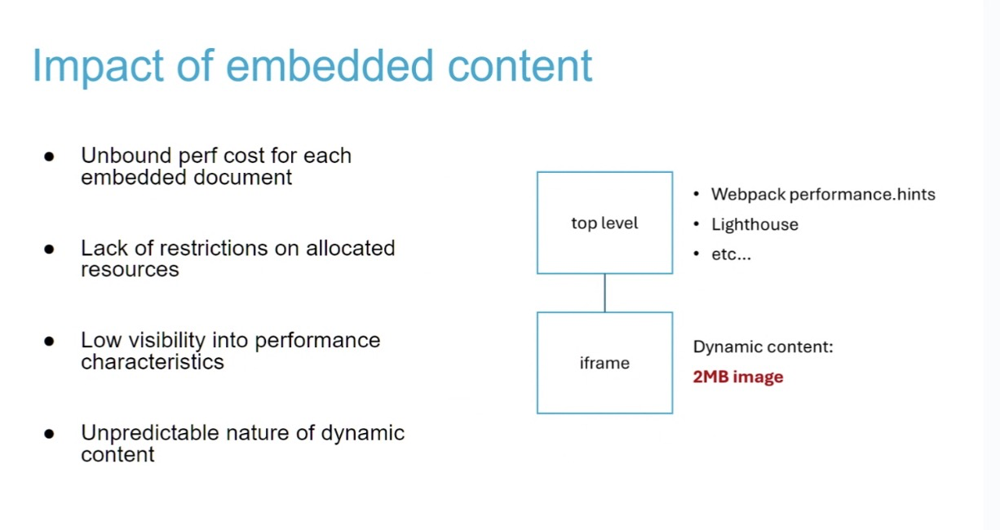
height: 650.00px; margin-left: 0.00px; margin-top: 0.00px; transform: rotate(0.00rad) translateZ(0px); -webkit-transform: rotate(0.00rad) translateZ(0px);" title="">- … Parallel issue: Even when host application is optimizing its perf, doesn’t have control over IFRAME
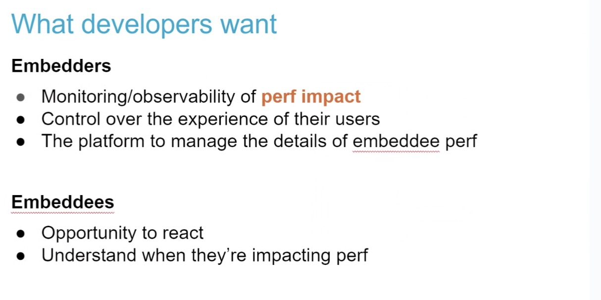
height: 606.00px; margin-left: 0.00px; margin-top: 0.00px; transform: rotate(0.00rad) translateZ(0px); -webkit-transform: rotate(0.00rad) translateZ(0px);" title="">- … So what they want is to have two things, some degree of monitoring to know what’s going on
- … Also to have some control over user experience
- … Becomes a challenge to consider performance of embedee
- … Taking inspiration from existing efforts
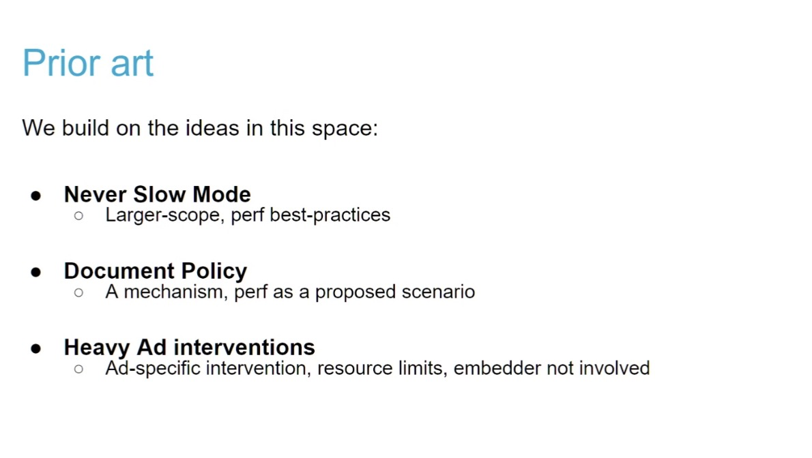
height: 672.00px; margin-left: 0.00px; margin-top: 0.00px; transform: rotate(0.00rad) translateZ(0px); -webkit-transform: rotate(0.00rad) translateZ(0px);" title="">- … Taking patterns, map to categories, hook to Doc policy, so they can be applied to embedded frames
- … Restrictions applied
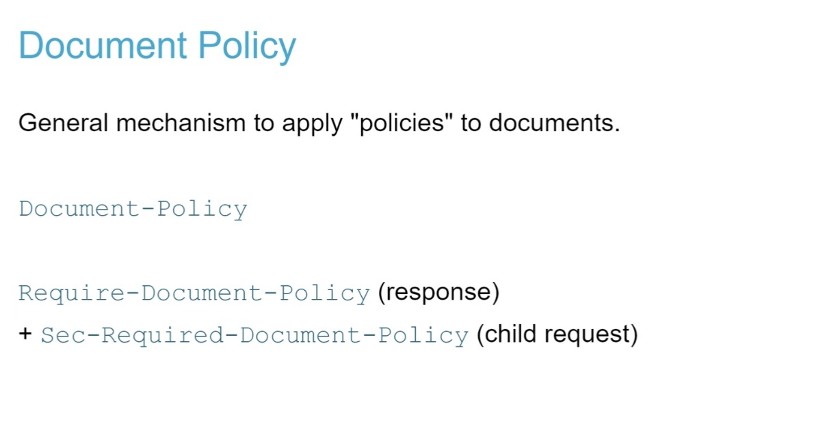
height: 630.00px; margin-left: 0.00px; margin-top: 0.00px; transform: rotate(0.00rad) translateZ(0px); -webkit-transform: rotate(0.00rad) translateZ(0px);" title="">- … Document Policy is general mechanism to apply to documents, background is from Permissions Policy
- … Use-cases from explainer, are things like any features in document, or performance use-case
- … Document requests the browser to apply given policies to itself, done through headers
- … Whenever that applies, restrictions apply, when Violation, there’s a report
- … Could also require policies for embedded resources
- … What we’re trying to do is put together those ideas
- … Patterns from never-slow mode, put into categories, etc
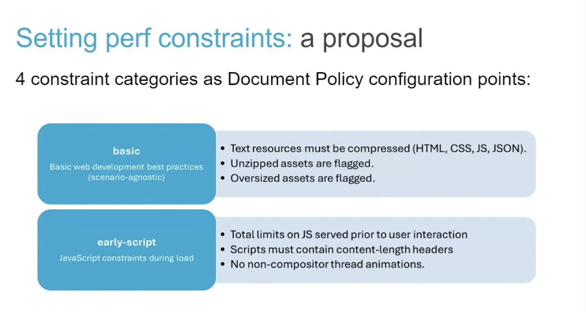
height: 644.00px; margin-left: 0.00px; margin-top: 0.00px; transform: rotate(0.00rad) translateZ(0px); -webkit-transform: rotate(0.00rad) translateZ(0px);" title="">- … We’ve grouped them, trying to go from most simple/basic to fix for embedded document
- … e.g. text must be compressed, unzipped or oversized flagged
- … Document can try to enforce that
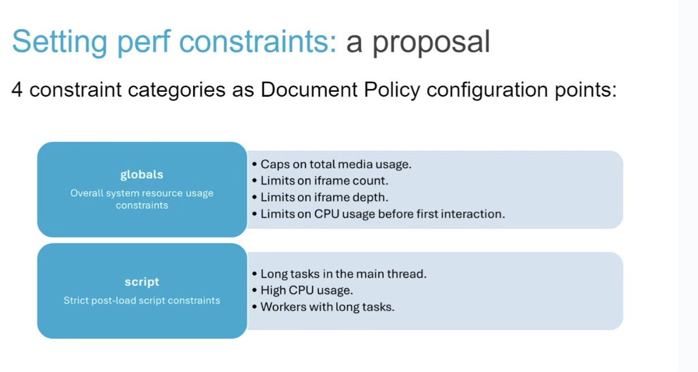
height: 652.00px; margin-left: 0.00px; margin-top: 0.00px; transform: rotate(0.00rad) translateZ(0px); -webkit-transform: rotate(0.00rad) translateZ(0px);" title="">- … These are a bit more challenging, tracking things across lifetime
- … e.g. Total media usage, iframe count, depth, etc
- … Last category is more strict constraints after load (e.g. Long Tasks)
- … We do have a couple things that we identify as challenges, I would love to hear thoughts of direction
- Bas: Appreciate the sympathy of proposal, feels like implementation would be difficult for things here
- … What do you do, single block of JavaScript, I believe Firefox has a preemption, but not geared towards something like this
- … How you limit seems difficult to me, if something violates, what do you do next?
- … Complex to do
- Nic: Comments on limits and caps, but where are those limits defined? Is there a number associated with these?
- Luis: We don’t know what the limits should be. The intention is for the platform to decide the limits and what should be the right size. Maybe we can decide based on stats related to specific resource types, etc.
- Nic: It does feel like it’s an easy thing to argue about.
- Andy: this is still early. We expect this to be hard and iterated on. But it has come up multiple times over the past decade, so we’re willing to start the discussion here.
- … maybe we can start with the easier things
- Yoav: I think that platform-defined limits that are a sliding scale over time mean that any semantics of what developers are defining may move over time.
- … Would be a very tricky thing to do
- … Either you’re breaking content that didn’t break before, or you’re unable to move the slides because of content breakage
- … I think we need Developer-Defined limits, and potentially, if you want to reward developers doing the right thing, e.g. badge to user saying the site is fast, then reward is something the platform can do over time
- … Not sure what the incentive model would be here
- … Values/limits themselves, need to be developer defined (or overwritten)
- … You won’t be able to change defaults without breakage
- Michal: +1 love energy behind this, one general area that would be useful for Web Platform in this space, might be able to pre-empt LongTasks if they’re running, but we have tools
- … We have prioritized Task Scheduling APIs now, tasks get quickly de-prioritized if not playing along, or if we’re struggling to keep up with, you may not get a slot in the queue
- … Trying to update all code in the world to be more yield-y, modern, etc
- … Event Observation that wants to know when users interact with the page, but it doesn’t need to be blocking and synchronous
- … Accept event and postpone/yield
- … Policy if you’re passive event listener by default if you’re not dealing with interaction
- Bas: This is embedded content, in different process in many cases, using existing priority architecture falls apart in some ways
- … Not saying it can’t be done but it would be difficult
- Bas: Whatever limits, will be hard to define in cross-UA, hard to spec
- …Web compat challenges here as well, interop
- Yoav: We’ll need to define those properly
- Luis: Explainer, please add thoughts to it: https://github.com/MicrosoftEdge/MSEdgeExplainers/blob/main/PerformanceControlOfEmbeddedContent/explainer.md